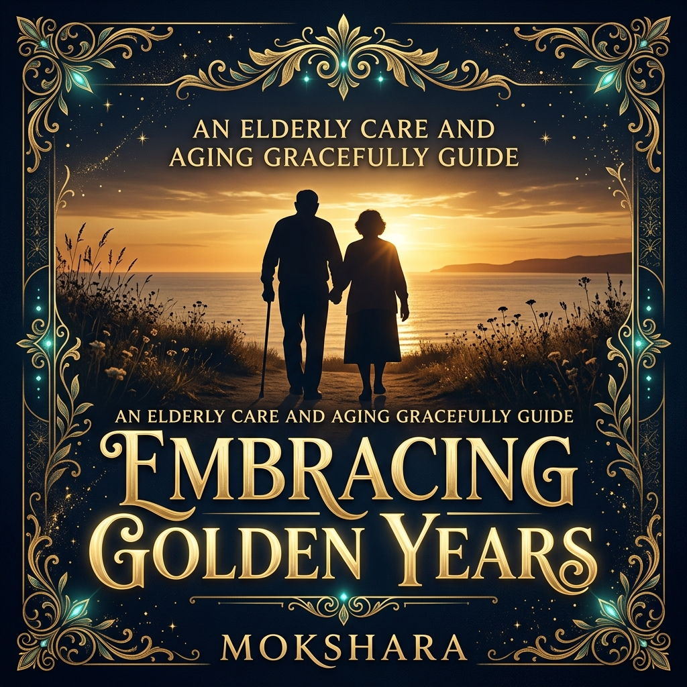
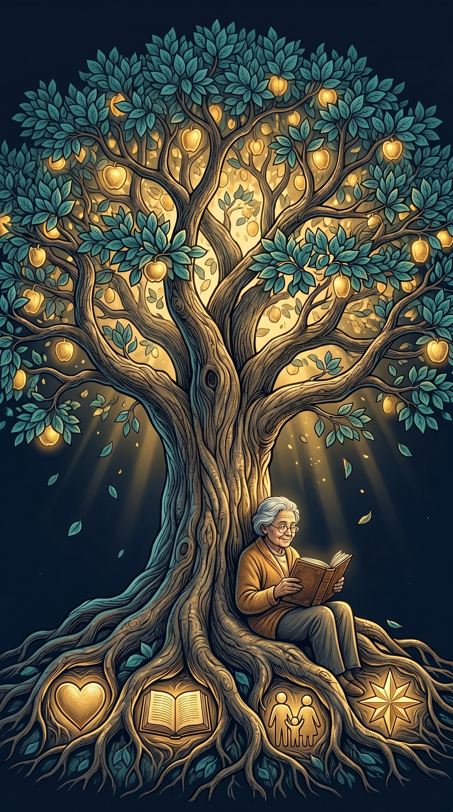
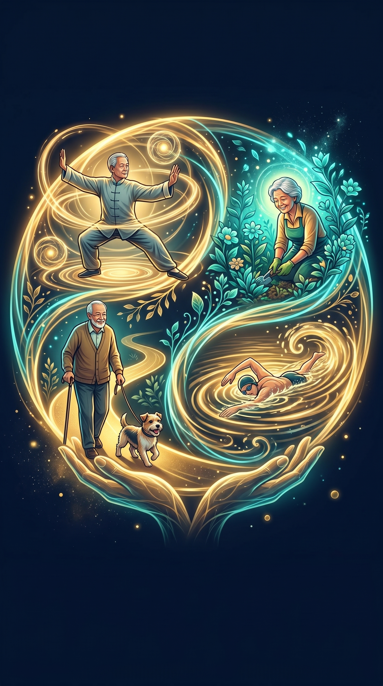
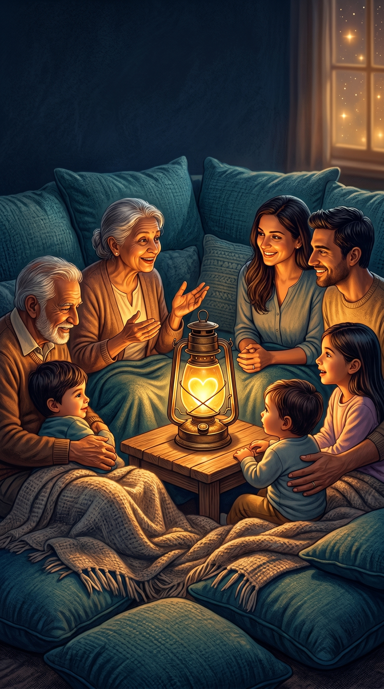
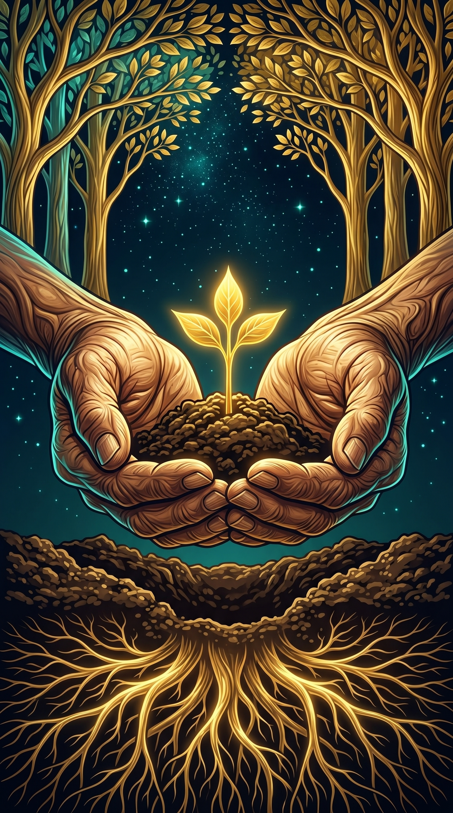

Embracing
Golden Years
"Ageing is not lost youth but a new stage of opportunity and strength."
— Betty Friedan
Embracing Golden Years
A Mokshara Wellness Publication
© 2026 Mokshara. All rights reserved.
No part of this ebook may be reproduced, distributed, or transmitted
in any form without the prior written permission of the publisher.
This ebook is for educational and informational purposes only.
Please consult healthcare professionals for medical advice.
First Edition — 2026
mokshara.in
Contents

- 01Ageing with Grace — A New Perspective
- 02Finding Purpose After Retirement
- 03Movement Is Medicine
- 04Staying Connected — The Longevity Secret
- 05Planting Seeds of Wisdom
Ageing with Grace — A New Perspective
The dominant cultural narrative about ageing is one of decline — loss of ability, loss of relevance, loss of vitality. But science tells a dramatically different story. Ageing, when approached with intention, is not a descent. It is an ascent into a phase of life with unique neurological advantages that youth simply cannot offer.
The ageing brain is not a deteriorating machine. It is a reorganising one. While processing speed may slow, the brain compensates with something far more valuable: crystallised intelligence — the accumulated wisdom from decades of experience, pattern recognition, and emotional depth that no algorithm or young mind can replicate.
The Neuroscience
Dr. Gene Cohen's landmark research at George Washington University demonstrated that the ageing brain develops new capabilities. After age 60, the brain begins using both hemispheres simultaneously for tasks that younger brains handle with only one — a process called "bilateral activation." This creates richer, more nuanced thinking. Additionally, the amygdala becomes less reactive to negative stimuli with age, meaning older adults experience fewer extreme negative emotions and greater emotional stability.
What Science Says About Ageing Well
- Emotional regulation improves with age — older adults report higher life satisfaction than middle-aged adults
- Vocabulary and knowledge continue to grow throughout life — peaking in the 60s-70s
- The "positivity effect" means older brains naturally focus more on positive information
- Social wisdom — the ability to navigate complex relationships — peaks in later decades
- Creativity does not decline — it often transforms into more integrative, reflective forms
"The afternoon of life has just as much meaning as the morning — only, its meaning and purpose are different."
— Carl JungYou are not fading. You are ripening. Every year adds depth to your perspective, warmth to your wisdom, and richness to your soul that no amount of youth could provide.
Finding Purpose After Retirement

Retirement from work does not mean retirement from purpose. In fact, the Japanese concept of ikigai — "a reason for being" — has been identified as one of the key factors behind the extraordinary longevity of Okinawan elders, who live an average of 7 years longer than their Western counterparts.
A 2019 study in JAMA Network Open followed 7,000 adults over 50 and found that those with a strong sense of purpose had a 15.2% lower risk of death from any cause over 5 years compared to those without purpose. Purpose is not just philosophy — it is a measurable longevity factor.
Purpose Is Not a Grand Mission
Purpose does not have to be dramatic. It is not about saving the world or building an empire. For many, purpose in later years is beautifully simple: tending a garden, mentoring a grandchild, volunteering at a temple, writing family stories, learning a musical instrument, or being a calm presence for those who need one.
Discovering Your Ikigai
- What do you love? List 5 activities that make time disappear when you do them
- What are you good at? List 5 skills or qualities others appreciate in you
- What does the world need? What problems around you — in family, community, neighbourhood — could use your help?
- Find the intersection: Where do your loves, strengths, and the world's needs overlap? That is your ikigai
- Start small: Dedicate just 30 minutes a day to this intersection. Purpose grows through practice, not planning
The Neuroscience
Having a sense of purpose activates the ventromedial prefrontal cortex — a brain region associated with self-relevance and personal meaning. It also stimulates consistent low-level dopamine release, which maintains motivation, curiosity, and engagement with life. Purpose literally keeps the brain's reward system active and healthy.
Purpose is not something you retire from. It is something you evolve into. The question is never "What should I do?" — it is "What wants to grow through me now?"
Movement Is Medicine

If physical exercise were a pill, it would be the most prescribed medication in history. For older adults, regular movement is not optional wellness — it is the single most powerful intervention against cognitive decline, cardiovascular disease, depression, falls, and premature death.
The World Health Organization recommends that adults over 65 engage in at least 150 minutes of moderate-intensity aerobic activity per week (about 22 minutes per day), plus muscle-strengthening activities twice per week. But even smaller amounts produce significant benefits.
The Neuroscience
Exercise stimulates the production of Brain-Derived Neurotrophic Factor (BDNF) — a protein that acts like "fertiliser" for the brain. BDNF promotes the growth of new neurons (neurogenesis) in the hippocampus, directly protecting against age-related memory decline. A 2020 study in Neurology found that older adults who walked briskly for 40 minutes three times per week showed a 2% increase in hippocampal volume over one year — effectively reversing 1-2 years of age-related brain shrinkage.
Best Movement Practices for Golden Years
- Walking: 30 minutes daily reduces all-cause mortality by 20%. The most accessible exercise at any age
- Tai Chi: Reduces fall risk by 43% (meta-analysis, JAMA, 2017). Improves balance, flexibility, and calm
- Yoga: Improves joint mobility, reduces chronic pain, and lowers cortisol. Chair yoga is excellent for limited mobility
- Swimming: Zero-impact exercise that protects joints while building cardiovascular fitness and muscle strength
- Gardening: Combines physical activity with exposure to nature, soil microbes (beneficial for gut health), and purpose
- Dancing: Combines exercise with social connection and cognitive challenge. A 2003 NEJM study found it reduces dementia risk by 76%
The 10-Minute Morning Vitality Routine
- 2 minutes: Gentle stretching in bed — arms overhead, knee-to-chest, ankle circles
- 3 minutes: Standing balance — hold a chair, lift one foot for 30 seconds each side. Repeat twice
- 3 minutes: Walking in place or around the room with deliberate arm swings
- 2 minutes: Deep breathing — 5 cycles of 4-4-6 breathing to oxygenate your body
Your body does not need intensity — it needs consistency. A gentle walk taken daily does more for your brain, heart, and spirit than a marathon run once a year. Small, steady movement is the kindest medicine.
Staying Connected — The Longevity Secret

The longest-running study on human happiness — the Harvard Study of Adult Development, spanning 85 years and three generations — arrived at one clear conclusion: Good relationships keep us happier and healthier. Period. Not wealth. Not fame. Not achievement. Relationships.
Dr. Robert Waldinger, the study's current director, summarises decades of data simply: "The people who were the most satisfied in their relationships at age 50 were the healthiest at age 80." Social isolation, on the other hand, accelerates cognitive decline, weakens immunity, and increases inflammation — the biological engine of most chronic diseases.
The Neuroscience
Social interaction stimulates the release of oxytocin — the "bonding hormone" — which directly reduces cortisol, lowers blood pressure, and strengthens immune function. Conversely, loneliness activates the same brain regions as physical pain (the dorsal anterior cingulate cortex). For older adults, regular meaningful social contact is as important as medication compliance for managing chronic conditions.
Navigating Changing Relationships
As we age, our social circles naturally shrink. Friends move away, pass on, or drift apart. Retirement removes workplace connections. Children build their own lives. This is natural — but it requires intentional effort to maintain and build new connections.
7 Ways to Stay Connected
- Join a group: Temple committees, walking groups, book clubs, or community kitchens provide built-in social structure
- Teach something: Share a skill — cooking, knitting, language, music — with younger people. Teaching creates mutual respect and connection
- Schedule, don't wait: Put regular chai dates or phone calls in your calendar. Connection needs structure as we age
- Embrace technology: Video calls with grandchildren, WhatsApp family groups, and online communities keep bonds alive across distances
- Volunteer: Helping others creates purpose, gratitude, and belonging simultaneously
- Adopt a pet: Pets provide companionship, routine, and unconditional love. Dog owners walk 22 more minutes per day on average
- Be the initiator: Don't wait for invitations. Be the one who calls, invites, and reaches out. Most people are lonely — they're just waiting for someone to go first
Loneliness is not a sign that nobody cares. It is a signal that your heart is ready for more connection. Honour that signal. Pick up the phone. Open the door. The world is full of people waiting to be found by you.
Planting Seeds of Wisdom

Erik Erikson, the pioneering developmental psychologist, described the central task of later life as "generativity versus stagnation." Generativity is the desire to contribute to future generations — to leave the world better than you found it. It is not about monuments or fame. It is about seeds.
Every story you tell a grandchild. Every recipe you pass down. Every piece of advice born from hard-won experience. Every act of kindness witnessed by younger eyes. These are seeds — and they will grow long after you have moved on. Legacy is not what you build. It is what you plant.
"A society grows great when old people plant trees whose shade they know they shall never sit in."
— Greek ProverbCreating Your Living Legacy
You do not need to wait until the end of your life to create a legacy. In fact, the most powerful legacies are living ones — created through daily actions, shared wisdom, and intentional relationships right now.
Legacy Building Practices
- Write your story: Record family histories, personal turning points, and lessons learned. Even a handwritten journal is a treasure for future generations
- Create a "wisdom letter": Write a letter to each grandchild or young person in your life containing your most important life lessons. Give it to them now — don't wait
- Teach by presence: Children learn more from who you are than what you say. Be the person you want them to remember
- Document family recipes: Food carries memory and identity. A recipe book with stories behind each dish is a priceless heirloom
- Model graceful ageing: When younger people see you embrace ageing with dignity, humour, and purpose, you reshape their own fears about growing old
Cognitive Habits for a Sharp Mind
- Learn something new: A new language, instrument, or craft builds neural pathways at any age
- Read daily: 30 minutes of reading stimulates the temporal cortex and preserves verbal fluency
- Solve puzzles: Crosswords, sudoku, and strategy games maintain cognitive flexibility
- Sleep 7-8 hours: The brain's glymphatic system clears toxic proteins during deep sleep — protecting against dementia
- Eat for your brain: Mediterranean diet — rich in olive oil, fish, nuts, berries, and leafy greens — reduces Alzheimer's risk by 53%
You may not see every seed you plant grow into a tree. But somewhere, years from now, someone will rest in the shade of your wisdom — and they will be grateful for the life you lived.

May Your Years Be Gilded with Joy
Growing older is not an ending — it is a deepening. You carry decades of sunrises in your heart, volumes of wisdom in your bones, and a lifetime of love in your hands. That is not decline. That is magnificence.
May you move gently, connect deeply, and leave seeds of light wherever you go.
Relax. Heal. Rise.